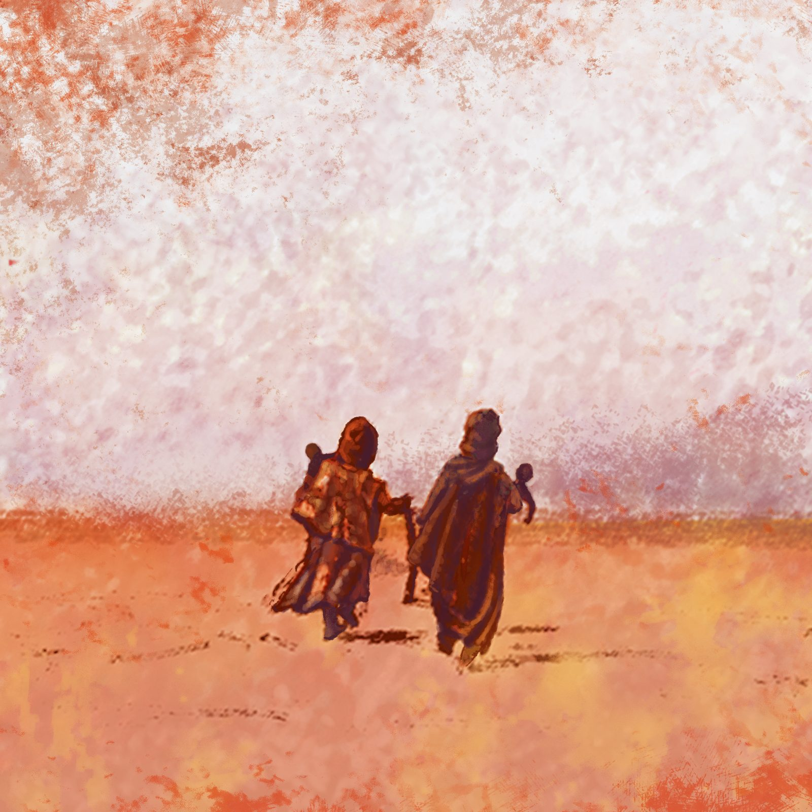

20 points
Weekly forum
Each week, we will post one or more discussion prompts in the weekly forum. Your weekly contribution to the forums of each module is mandatory and counts for a total of maximum 20 points (5 forums × 4 points).

ITCILO · Course Hub · 2026 cohort
Rights-based responses to climate induced mobility
This online course explores the labour dimensions of the complex intersection of climate change and human mobility. It looks at the impacts on labour markets, decent work and employment, at just transitions towards environmentally sustainable economies, and at labour mobility. With its unique tripartite structure bringing together governments, employers’ and workers’ organizations, the ILO is well placed to promote a holistic approach to these challenges.
The course does not give preference to migration over local adaptation: it presents labour mobility as one tool in the climate adaptation toolbox. It acknowledges that people already move, and will continue to do so, for different reasons in the context of climate change, and explores how labour market and employment strategies — including labour mobility — can help countries of origin and destination reduce vulnerabilities, build resilience, increase protection and benefit from the opportunities.
Duration, learning hours and language are taken from the course webpage; the other details from the annotated agenda.
The course is designed for policy makers, professionals, practitioners and experts wishing to develop their knowledge and operational capacity in relation to the labour dimensions of human mobility in the context of climate change impacts. Its overall aim is to strengthen knowledge and capacity, including by zooming in on existing practices, rather than prescribing specific techniques and tools.
The three phases are described on the course webpage; see Course requirements for what counts towards completion.
The first two modules establish the concepts and context of climate change and human and labour mobility. Three substantive modules then build operational knowledge on governance, policies and strategies, and decent work in the context of climate labour mobility.
| Module | Title | Live session(s) |
|---|---|---|
| Intro | Introduction and key concepts | Sessions 1–2 |
| 1 | Climate Change, Human Mobility, and the World of Work | Session 2 |
| 2 | Principles and Norms for a Rights-Based Response to the Labour Dimensions of Climate Mobility | Sessions 3–4 |
| 3 | International Governance of Climate Mobility | Sessions 7–8, 11 |
| 4 | Labour Policies and Strategies in Response to Climate Mobility | Sessions 4, 5, 9, 11 |
| 5 | Promoting Decent Work in the Context of Climate Mobility | Sessions 6, 9, 10, 11 |
| Group work | Country case studies: Zimbabwe, Barbuda, Tuvalu | Session 12 |
Before the start of the course, participants are expected to read the ILO (2022) Policy Brief Human mobility and labour migration related to climate change in a just transition towards environmentally sustainable economies and societies for all. Additional resources are recommended for every module and are listed week by week in the Timetable.
Participation and assessment
The process is organised on a scale of 0 to 100 points and requires the successful completion of a number of activities. Each activity is assigned a specific value, and the activities are grouped into the components below.
| Activity | Number | Points | Total points |
|---|---|---|---|
| Weekly Forum | 5 | 4 | 20 |
| Weekly Quiz | 6 | 5 | 30 |
| Group Work | 1 | 20 | 20 |
| Final Assignment | 1 | 30 | 30 |
| Course total points | 100 | ||
The training team reserves the right to award up to 10 extra points for exceptional contributions / active participation throughout the course.
20 points
Each week, we will post one or more discussion prompts in the weekly forum. Your weekly contribution to the forums of each module is mandatory and counts for a total of maximum 20 points (5 forums × 4 points).
30 points
At the end of each week, you need to complete a quiz of 10 multiple-choice questions. Correct answers earn 0.5 points and incorrect answers earn 0 points. Submission of the quizzes is mandatory and counts for a total of maximum 30 points (each weekly quiz = 5 points; 6 quizzes).
20 points
Active participation in the group work counts for a total of 20 points. The group work is based on three country case studies (Zimbabwe, Barbuda, Tuvalu), made available on the e-Campus with guiding questions. Groups present in Session 12 on 3 December 2026: up to 15 minutes per group, followed by 10 minutes of discussion and feedback.
30 points
If you wish to obtain a Certificate of Achievement, at the end of the course you will be asked to write a final assignment, which will count for up to 30 points.
You can stop after the weekly forum, weekly quiz and group work, and receive a Certificate of Participation.
Complete the final assignment (up to 30 points) in addition to the components above to obtain a Certificate of Achievement.
26 October – 4 December 2026
Twelve live online sessions, two per week, with the readings, forum and quiz that go with each week. Times are shown in CET, as in the annotated agenda.
All twelve live sessions are online. No in-person sessions are listed in the agenda.
Speakers and facilitators
The resource persons named in the course agenda, in alphabetical order by surname.
Photographs and biographies will be added when the resource persons provide them.
People labelled “To be confirmed” are marked as such in the agenda. Some speakers listed in the agenda are not shown because their names are incomplete or still being checked; they will be added once confirmed. Organisations are shown only where the agenda states them.
2026 cohort
A space to get to know the people taking the course alongside you.
Participant profiles for the 2026 cohort will appear here once verified information is available. Nothing is collected or stored on this page.
2026 cohort
Your views help improve the course.